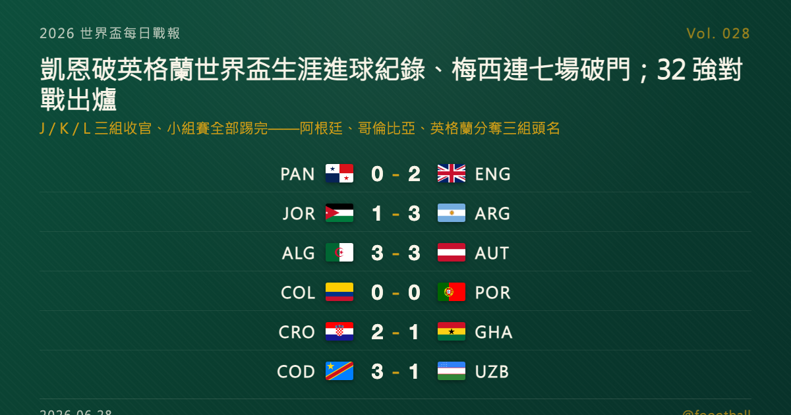

凱恩超越萊因克爾、登上英格蘭世界盃生涯射手王；梅西連七場破門領跑金靴；J／K／L 三組收官、32 強對戰全數出爐
2026 世界盃 J、K、L 三組末輪同日收官，小組賽就此全部踢完、32 強淘汰賽對戰全數出爐。英格蘭 2-0 巴拿馬，凱恩頭球頂進、以生涯第 11 顆世界盃進球超越萊因克爾（10 球），成為英格蘭世界盃史上頭號射手；阿根廷 3-1 約旦、三戰全勝奪 J 組頭名，梅西替補登場後一記任意球破門，達成連續七場世界盃比賽進球、以本屆 6 球領跑金靴榜。

2026 世界盃每日戰報 Vol. 028｜小組賽收官｜J／K／L 三組末輪賽果 + 完整 32 強對戰圖
§1 即時比分戰報
2026 世界盃小組賽迎來最後一個比賽日，J、K、L 三組六場同日落幕——至此 12 個小組全部踢完，前兩名加上 8 個最佳第三名共 32 隊確定晉級，淘汰賽完整對戰圖也正式出爐。兩則重量級個人紀錄在同一天誕生：在東盧瑟福，英格蘭隊長凱恩（Harry Kane）頭球頂進，攻入個人生涯第 11 顆世界盃進球、超越萊因克爾（Gary Lineker）的 10 球，登上英格蘭世界盃史上頭號射手；在阿靈頓，替補登場的梅西（Lionel Messi）以一記任意球破門，達成連續七場世界盃比賽進球的紀錄，並以本屆 6 球穩居金靴榜首。以下是本輪六場賽果：
| 賽事 | 比分 | 場館 | 焦點 |
|---|---|---|---|
| 🇵🇦 巴拿馬 — 🏴 英格蘭 | 0 - 2 | 東盧瑟福 MetLife Stadium | 貝林漢 62'、凱恩 67'（頭球，生涯第 11 顆世界盃進球、超越萊因克爾成英格蘭頭號射手）；英格蘭奪 L 組頭名 |
| 🇯🇴 約旦 — 🇦🇷 阿根廷 | 1 - 3 | 阿靈頓 AT&T Stadium | 洛塞爾索 19'、勞塔羅·馬丁內斯 31'（十二碼）、梅西（替補，任意球）；塔馬里為約旦扳回一城；梅西連七場破門、阿根廷三戰全勝奪 J 組頭名 |
| 🇩🇿 阿爾及利亞 — 🇦🇹 奧地利 | 3 - 3 | 堪薩斯城 Arrowhead Stadium | 阿瑙托維奇 28'、貝爾加里 45'、薩比策 55'、馬赫雷斯 60'＋90+3'、卡萊季奇 90+6'；補時連番進球、兩隊同晉級 |
| 🇨🇴 哥倫比亞 — 🇵🇹 葡萄牙 | 0 - 0 | 邁阿密花園 Hard Rock Stadium | 互交白卷；哥倫比亞、葡萄牙分居 K 組第一、第二攜手晉級 |
| 🇭🇷 克羅埃西亞 — 🇬🇭 迦納 | 2 - 1 | 費城 Lincoln Financial Field | 蘇契奇 31'、柏拉西奇 83'（頂進莫德里奇角球）；盧卡森 73'（GHA）；克羅埃西亞以 L 組第二出線 |
| 🇨🇩 民主剛果 — 🇺🇿 烏茲別克 | 3 - 1 | 亞特蘭大 Mercedes-Benz Stadium | 紹穆羅多夫 10'（十二碼，UZB）；維薩 68'（十二碼）＋90+1'、馬耶萊 78'；剛果末段逆轉、隊史首進淘汰賽 |
六場分屬 J、K、L 三組末輪。三組頭名各由阿根廷、哥倫比亞、英格蘭收下；奧地利、葡萄牙、克羅埃西亞分居各組第二同步晉級。最戲劇性的一場在堪薩斯城——阿爾及利亞與奧地利踢出 3-3，馬赫雷斯補時階段為阿爾及利亞反超、奧地利隨後由卡萊季奇頭球追平，最終兩隊握手言和、攜手晉級；民主剛果則在落後下半場連進三球逆轉烏茲別克，隊史首度闖進世界盃淘汰賽。隨著小組賽落幕，§2 整理三組最終排名、8 個最佳第三名與完整 32 強對戰圖，§4 則預告今日特刊——英格蘭等了一個世代的那座紀錄，與扛著它的那位隊長。
§2 排行榜區：小組賽收官 — 三組最終排名 + 金靴榜 + 32 強對戰圖
本屆 48 隊擴軍制：12 個小組、每組前兩名加上 8 個最佳第三名，共 32 隊晉級淘汰賽。隨著 J、K、L 三組踢完，全部 12 組小組賽正式收官，晉級名單與淘汰賽對戰全數底定。
J 組（末輪打完）——阿根廷三戰全勝、9 分高居榜首，三場僅失一球；奧地利與阿爾及利亞同積 4 分，兩隊末輪直接對話 3-3 言和、互比成績無法分高下，依規則改比總淨勝球，奧地利（0）力壓阿爾及利亞（-2）排名第二，阿爾及利亞以小組第三晉級最佳第三名；首次參賽的約旦三戰全敗、一分未取墊底出局：
| # | 球隊 | 賽 | 勝 | 和 | 負 | 進 | 失 | 差 | 分 |
|---|---|---|---|---|---|---|---|---|---|
| 1 | 🇦🇷 阿根廷 | 3 | 3 | 0 | 0 | 8 | 1 | +7 | 9 |
| 2 | 🇦🇹 奧地利 | 3 | 1 | 1 | 1 | 6 | 6 | +0 | 4 |
| 3 | 🇩🇿 阿爾及利亞 | 3 | 1 | 1 | 1 | 5 | 7 | -2 | 4 |
| 4 | 🇯🇴 約旦 | 3 | 0 | 0 | 3 | 3 | 8 | -5 | 0 |
K 組（末輪打完）——哥倫比亞 2 勝 1 和、7 分奪冠；葡萄牙三場不敗、1 勝 2 和 5 分排名第二；民主剛果 4 分、淨勝球 +1 力壓淨勝球 -9 的烏茲別克，以小組第三晉級最佳第三名、寫下隊史首度闖進淘汰賽；烏茲別克三戰全敗墊底出局：
| # | 球隊 | 賽 | 勝 | 和 | 負 | 進 | 失 | 差 | 分 |
|---|---|---|---|---|---|---|---|---|---|
| 1 | 🇨🇴 哥倫比亞 | 3 | 2 | 1 | 0 | 4 | 1 | +3 | 7 |
| 2 | 🇵🇹 葡萄牙 | 3 | 1 | 2 | 0 | 6 | 1 | +5 | 5 |
| 3 | 🇨🇩 民主剛果 | 3 | 1 | 1 | 1 | 4 | 3 | +1 | 4 |
| 4 | 🇺🇿 烏茲別克 | 3 | 0 | 0 | 3 | 2 | 11 | -9 | 0 |
L 組（末輪打完）——英格蘭 2 勝 1 和、7 分奪冠；克羅埃西亞 2 勝 1 負、6 分排名第二；迦納 4 分、以小組第三搭上最佳第三名末班車；巴拿馬三戰全敗、一球未進墊底出局：
| # | 球隊 | 賽 | 勝 | 和 | 負 | 進 | 失 | 差 | 分 |
|---|---|---|---|---|---|---|---|---|---|
| 1 | 🏴 英格蘭 | 3 | 2 | 1 | 0 | 6 | 2 | +4 | 7 |
| 2 | 🇭🇷 克羅埃西亞 | 3 | 2 | 0 | 1 | 5 | 5 | +0 | 6 |
| 3 | 🇬🇭 迦納 | 3 | 1 | 1 | 1 | 2 | 2 | +0 | 4 |
| 4 | 🇵🇦 巴拿馬 | 3 | 0 | 0 | 3 | 0 | 4 | -4 | 0 |
8 個最佳第三名（確定晉級）：波士尼亞（B 組）、巴拉圭（D 組）、厄瓜多（E 組）、瑞典（F 組）、塞內加爾（I 組）、阿爾及利亞（J 組）、民主剛果（K 組）、迦納（L 組）。A、C、G、H 四組的第三名則遭淘汰。
金靴榜（小組賽收官）：梅西以本屆 6 球獨居榜首，同時把個人世界盃生涯進球數推高到 19 球，繼續坐穩男足世界盃史上頭號射手；姆巴佩、登貝萊、維尼修斯、哈蘭德各 4 球並列其後；維薩、凱恩等多人 3 球。
32 強對戰圖（淘汰賽 R32）：
| 日期 | 對戰 | 城市 |
|---|---|---|
| 6/28 | 南非 — 加拿大 | 洛杉磯 |
| 6/29 | 德國 — 巴拉圭 | 波士頓 |
| 6/29 | 荷蘭 — 摩洛哥 | 蒙特雷 |
| 6/29 | 巴西 — 日本 | 休士頓 |
| 6/30 | 法國 — 瑞典 | 東盧瑟福 |
| 6/30 | 象牙海岸 — 挪威 | 達拉斯 |
| 6/30 | 墨西哥 — 厄瓜多 | 墨西哥城 |
| 7/1 | 英格蘭 — 民主剛果 | 亞特蘭大 |
| 7/1 | 美國 — 波士尼亞 | 舊金山灣區 |
| 7/1 | 比利時 — 塞內加爾 | 西雅圖 |
| 7/2 | 葡萄牙 — 克羅埃西亞 | 多倫多 |
| 7/2 | 西班牙 — 奧地利 | 洛杉磯 |
| 7/2 | 瑞士 — 阿爾及利亞 | 溫哥華 |
| 7/3 | 阿根廷 — 維德角 | 邁阿密 |
| 7/3 | 哥倫比亞 — 迦納 | 堪薩斯城 |
| 7/3 | 澳洲 — 埃及 | 達拉斯 |
完整分組積分、射手榜與淘汰賽對戰圖可見站上「戰況中心」：https://foootball.twtools.cc/standings/
§3 賽事摘要
巴拿馬 0-2 英格蘭（L 組）——英格蘭穩紮穩打拿下小組頭名。下半場貝林漢（Jude Bellingham）第 62 分鐘首開紀錄，緊接著第 67 分鐘又助攻凱恩頭球破門；凱恩這顆進球是他個人世界盃生涯第 11 球，超越萊因克爾保持的 10 球，正式成為英格蘭世界盃史上頭號射手。巴拿馬三戰全敗、一球未進，黯然告別小組賽。
約旦 1-3 阿根廷（J 組）——衛冕冠軍以全勝之姿收官。阿根廷上半場由洛塞爾索（Giovani Lo Celso）第 19 分鐘打進、勞塔羅·馬丁內斯（Lautaro Martínez）第 31 分鐘罰球命中先馳得點；約旦由塔馬里（Mousa Al-Tamari）扳回一城，但替補登場的梅西隨後以一記任意球錦上添花。這顆進球讓梅西達成連續七場世界盃比賽都有進球的紀錄（橫跨 2022 與 2026 兩屆），本屆已累積 6 球領跑金靴；阿根廷三戰全勝、以 J 組第一晉級。
阿爾及利亞 3-3 奧地利（J 組）——當日最瘋狂的一場。奧地利阿瑙托維奇（Marko Arnautović）第 28 分鐘破門，阿爾及利亞貝爾加里（Rafik Belghali）半場前扳平；下半場薩比策（Marcel Sabitzer）再為奧地利超前、馬赫雷斯（Riyad Mahrez）第 60 分鐘又追平，並在補時階段罰進、為阿爾及利亞反超。眼看阿爾及利亞要全取三分，奧地利卡萊季奇（Saša Kalajdžić）卻在補時尾聲頭球絕平。3-3 的結果讓兩隊皆大歡喜：奧地利以 J 組第二、阿爾及利亞以最佳第三名雙雙晉級。
哥倫比亞 0-0 葡萄牙（K 組）——兩隊賽前皆已大致鎖定出線，末輪互交白卷、各取一分。哥倫比亞以 7 分壓過葡萄牙奪下 K 組頭名，葡萄牙三場不敗、以小組第二晉級；一場沒有勝負、卻雙贏的收官戰。
克羅埃西亞 2-1 迦納（L 組）——克羅埃西亞鎖住小組第二。蘇契奇（Luka Sučić）第 31 分鐘先進球，迦納盧卡森（Derrick Luckassen）第 73 分鐘扳平；但老隊長莫德里奇（Luka Modrić）開出角球，柏拉西奇（Nikola Vlašić）第 83 分鐘頭球頂進，為克羅埃西亞鎖定勝局。迦納雖落敗，仍以小組第三搭上最佳第三名末班車晉級。
民主剛果 3-1 烏茲別克（K 組）——剛果上演大逆轉、寫下隊史新頁。烏茲別克紹穆羅多夫（Eldor Shomurodov）第 10 分鐘先以罰球破門，但民主剛果下半場連入三球：維薩（Yoane Wissa）第 68 分鐘罰進扳平、馬耶萊（Fiston Mayele）第 78 分鐘超前，維薩補時再下一城梅開二度。最終剛果民主共和國以小組第三晉級最佳第三名、隊史首度闖進世界盃淘汰賽。
§4 焦點觀察：今日雙特刊預告——凱恩破英格蘭紀錄、梅西登世界盃射手王
同一個比賽日，兩位巨星各自寫下歷史，也各自值得一篇深度特刊。
第一篇關於凱恩。 當他在 MetLife 球場頂進貝林漢那記傳中，他追過的不只是萊因克爾——而是一段橫跨近四十年的英格蘭等待。萊因克爾的 10 顆世界盃進球高懸了三十多年，如今由這位從熱刺到拜仁、把無數紀錄一一收入囊中的隊長親手改寫。耐人尋味的是，凱恩幾乎拿遍了所有進球紀錄，卻直到 2025 年才在拜仁拿下生涯首座冠軍、且至今未曾為英格蘭捧杯——而 2026 年的這支英格蘭，正被視為最有機會終結 1966 年以來等待的一屆。特刊〈凱恩的第 11 球〉完整盤點他的世界盃之路與英格蘭的奪冠執念；淘汰賽首輪，英格蘭將於 7 月 1 日在亞特蘭大對上民主剛果。
第二篇關於梅西。 他替補登場的一記任意球，讓自己早已保持的男足世界盃歷史射手王紀錄推高到第 19 球；同時，他也成為史上首位連續七場世界盃比賽都有進球的球員。而讓這一切更重的，是他的年紀——39 歲，這很可能（但梅西本人尚未證實）是他最後一屆世界盃。特刊〈梅西的第七場與第十九球〉細數他鋪了二十年的世界盃進球地圖，與這場可能的告別；衛冕冠軍阿根廷淘汰賽首輪將於 7 月 3 日在邁阿密對上黑馬維德角。
📖 特刊全文（稍後上線）： ・凱恩／英格蘭：https://foootball.twtools.cc/articles/worldcup-special-2026-06-28-kane-england/ ・梅西／阿根廷：https://foootball.twtools.cc/articles/worldcup-special-2026-06-28-messi/
常見問題
小組賽全部踢完了嗎？接下來淘汰賽怎麼打？
是的。J、K、L 三組末輪在今日收官，12 組小組賽全數踢完。每組前兩名、加上成績最好的 8 個第三名，共 32 隊晉級。淘汰賽 32 強（R32）自 6 月 28 日起開打、至 7 月 3 日打完首輪，採單場淘汰、平手則延長賽加 PK。
梅西「連續七場世界盃進球」是連續七屆嗎？
不是。是連續七「場」世界盃比賽都有進球，橫跨 2022 與 2026 兩屆，並非連續七「屆」。梅西生涯共踢過 6 屆世界盃（2006、2010、2014、2018、2022、2026），其中 2010 那屆並未進球。本屆他已攻入 6 球領跑金靴，生涯累積 19 顆世界盃進球、為男足世界盃史上最多。
凱恩破的是哪一項紀錄？
是英格蘭「世界盃生涯總進球」紀錄。凱恩這顆是他世界盃生涯第 11 球，超越萊因克爾的 10 球，成為英格蘭世界盃史上頭號射手——是跨屆累計的生涯紀錄，並非單屆紀錄（本屆他攻入 3 球）。
Tags: 世界盃, 2026世界盃, 凱恩, 梅西, 英格蘭, 淘汰賽